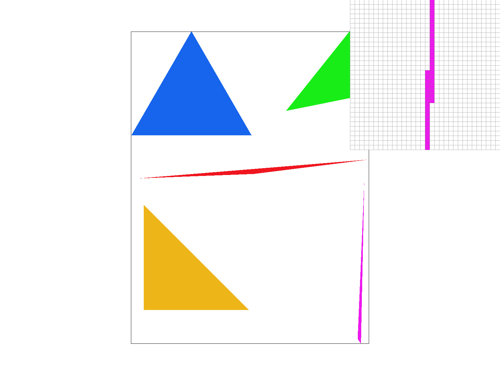
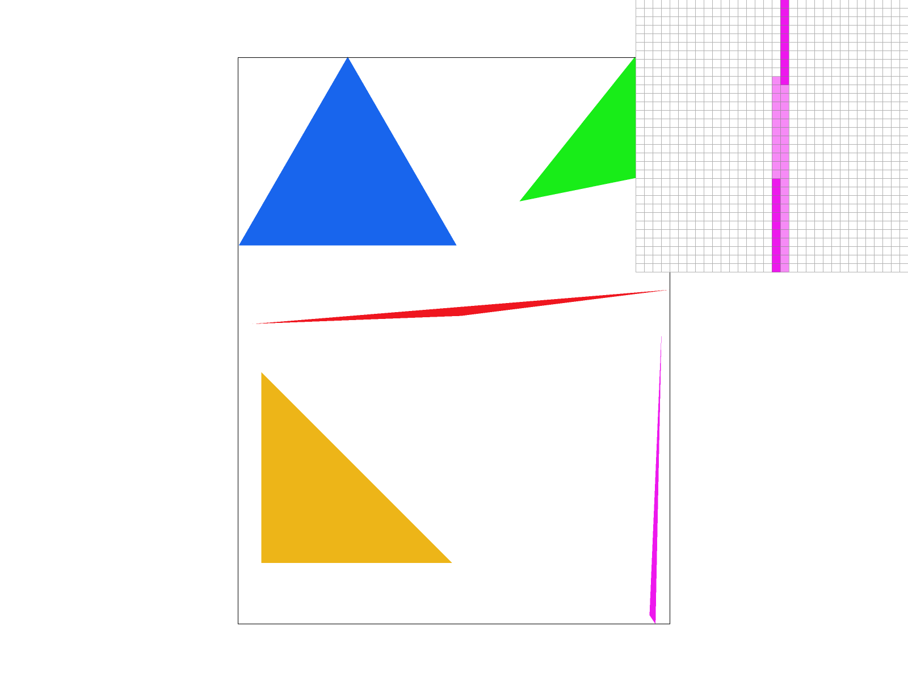
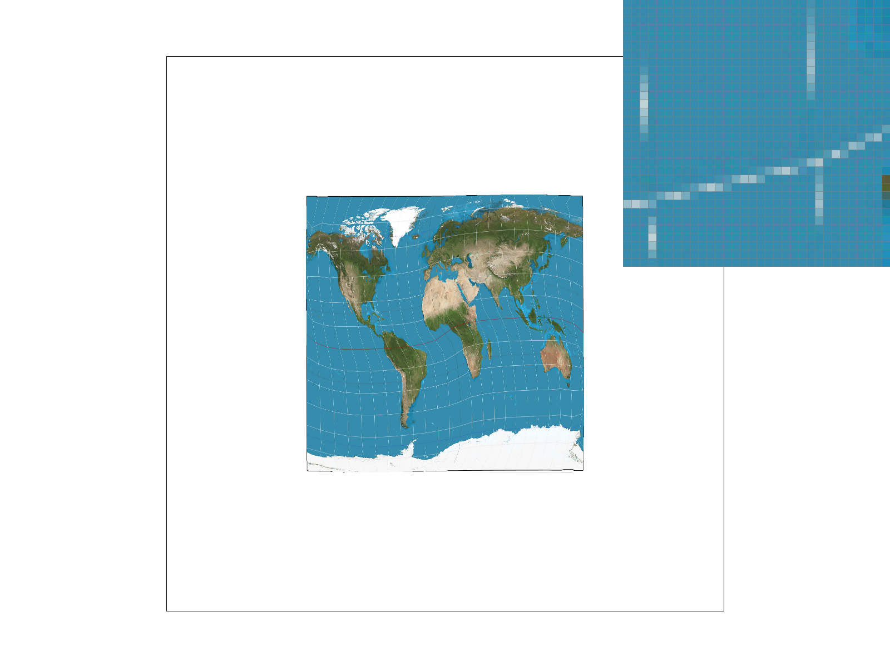
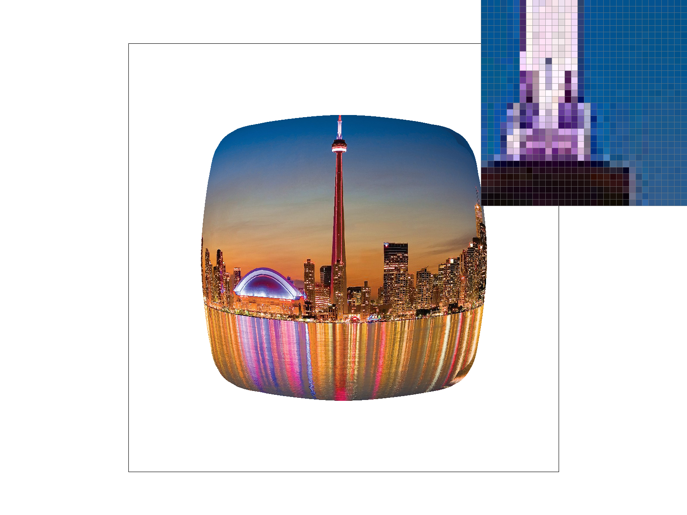
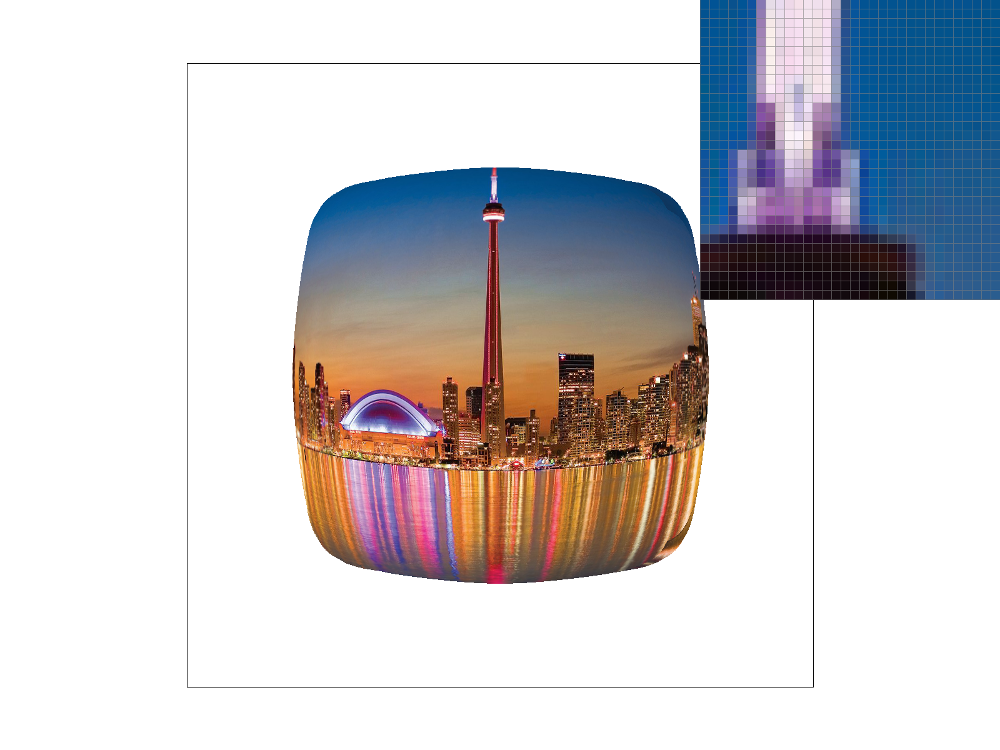
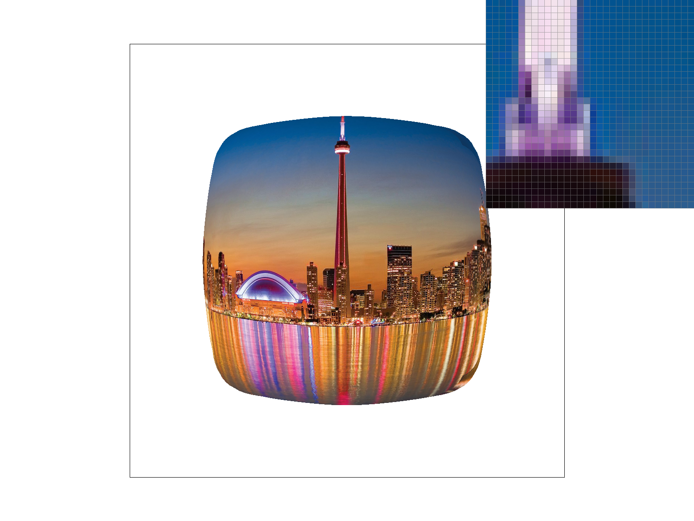

CS184/284A Spring 2025 Homework 1 Write-Up
Link to webpage: Nyahello!
Link to GitHub repository: Nyahello!

Overview
In this assignment, we built a basic rasterizer that covers different sampling frequencies and sampling techniques to learn how images are drawn to the screen. Some interesting problems that came up included transforming between different spaces and using interpolation to approximate points and more!Task 1: Drawing Single-Color Triangles
We implemented rasterizing a triangle by looking for the edges of the triangle and going through each pixel within the bounding box that surrounds that triangle and testing if that point is within the triangle using the line test. If the point was within the triangle described by the input coordinates, we called rasterize on that point. If the point was not within the triangle, then we just moved onto a different point. Each point represented the center of the pixel that we were rasterizing.
We guaranteed that the algorithm was no worse than checking each sample within the bounding box of the triangle by checking for which points had the highest/lowest coordinates in both the x and y axis. We set those values as the loop limit for our double for-loop so it would loop only through the bounding box defined by those coordinate points.
Task 2: Antialiasing by Supersampling
Supersampling Data Structure and Algorithm
First, we recalculated the left and right bound, and top and bottom bound for buffer space by multiplying the original bounds by square root of sample rate to reform the space as the new super sampled space. Then we loop through every single point in the super sampling buffer space and assign color based on a similar point in the image. Lastly, we go through every point in the target frame buffer and assign the color based on the average of the colors of the corresponding pixels from the supersampled frame buffer in resolve_to_framebuffer.
Why is supersampling useful and modifications for Antialiasing
Supersampling is useful because for the pixels on the edges, supersampling can reduce jaggies through averaging the colors surrounding pixels, blurring the edges while also antialiasing ambiguous edges of the triangle.
|

|

|
|
Task 3: Transforms
For this task, we made Mr.Robot wave at the screen. This involved adding a new transform and a rotation to the second segment of the left arm as well as to both sections of the right arm.Task 4: Barycentric coordinates
Barycentric coordinates represent a point in a triangle by using the weighted sum of the triangle vertices. Instead of the traditional global coordinates x and y, we have alpha, beta, and gamma to represent the location of a point within the triangle. Each one of the alpha, beta, and gamma will be the amount of weight its corresponding vertex will have on formation of the point we are interested in.
Task 5: "Pixel sampling" for texture mapping
Pixel sampling is a technique used to map pixels from textures to the screen. In order to map a texture on a surface, we need to compute the barycentric coordinates for each pixel and grab the corresponding one from the texture. However, sometimes the coordinates do not line up properly due to the screen having a different topology than the texture. This results in the need for nearest neighbor sampling and bilinear sampling to find the appropriate pixel from the texture.
Nearest neighbor sampling is a pixel sampling technique that is implemented by finding the nearest integer texel coordinate to the given barycentric coordinate. Bilinear sampling instead uses linear interpolation to get an average between the four nearest texels.
|
|

|
|
|
|
In general, bilinear seems to produce a smoother transition on the edge than nearest neighbor does. The difference is more drastic when the sampling rate is low (sample rate 1 for example). In the above screenshots where sample rate is 1, nearest neighbor produces aliased and jagged edges, while bilinear sampling produced edges are more smoothed over.
When comparing a sampling rate of 1 to higher supersampled rates, the difference between bilinear and nearest neighbor is less obvious in low sampling rates because there is no additional blending/smoothing effects that are included in supersampling. As the supersampling rate goes up, both bilinear and nearest neighbor have smoother results.
Task 6: "Level Sampling" with mipmaps for texture mapping
What is level sampling
Level sampling is the idea that as objects in the screen are closer or further from the viewer, they should get sampled at different resolutions since details naturally fade out as distance increases.
|

|
|
|

|

|
Implementation
We implemented level sampling by getting the level that a point seems to be at through barycentric coordinates and comparing with points that have a slight variation. Nearest level sampling just rounds the level we get through the equation presented in lecture to the nearest integer.
The other pixel sampling techniques are applied on top using the texture at the approximated level. For linear sampling however, we had to get the level as a continuous number and average between the pixels in the upper and lower levels based on how close the actual level was to the upper and lower level.
Antialiasing quality and tradeoffs
In general, pixel sampling methods should be the fastest since it mainly does coordinate transforms without adding more pixels (a max of 4 if using bilinear which makes it take about as much time as increasing the supersample rate to 4). It also uses the least amount of memory since it uses just the original texture and does not require new objects to be created. However, these benefits tradeoff into a generally worse ability to antialias when compared to supersampling and level sampling.
Level sampling is a little bit slower than pixel sampling because it needs to estimate a level and may need to sample from two different textures but the biggest difference is that it requires more memory since it needs to create new mipmaps for the different level resolutions. That being said, it results in a better image than pixel sampling.
The slowest and most memory costly method is supersampling because it somewhat increases the size of the final output as an intermediate step but because of this, it is able to produce the best antialiased results.